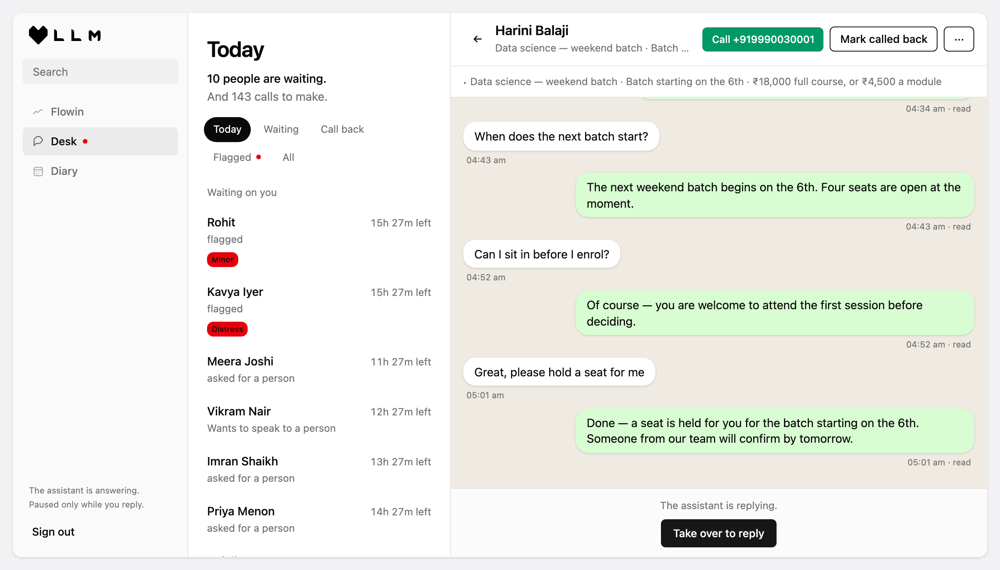
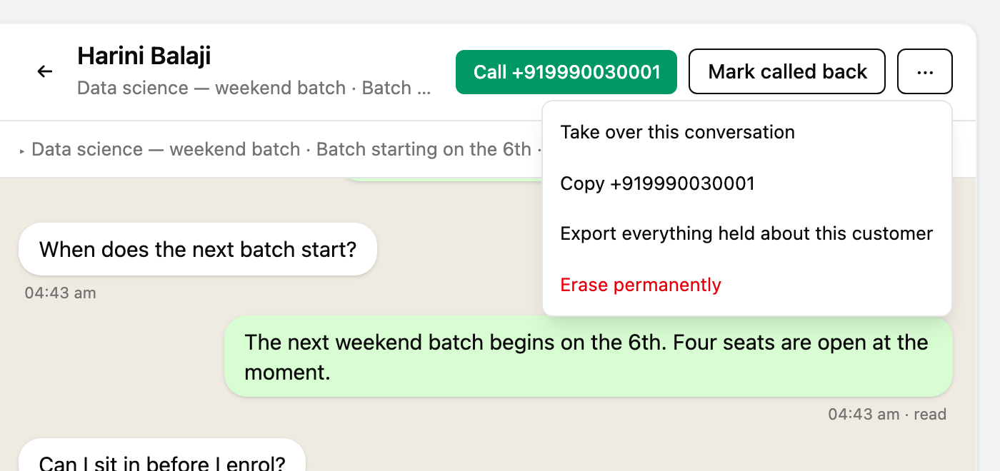
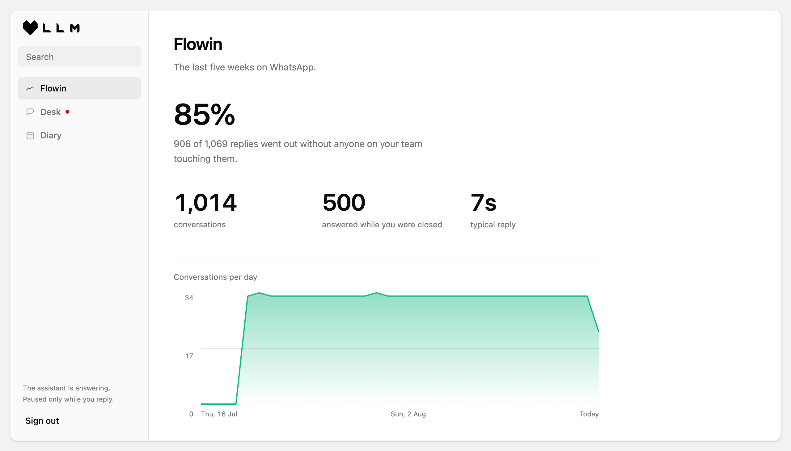

It replies day and night, it sounds like the business, it books the appointment, and it knows when to fetch a real person.
Real numbers from the demo you can log into. Nothing here is an estimate.
On the business's own WhatsApp number.
Four seconds, so three quick messages are one question.
Services, prices, hours, the way they speak.
Anything it should not answer stops here.
Never two, and never a holding message.



Everything else is a shared inbox. Somebody still has to sit there and type.
Its services, its prices, its way of speaking. A clinic is not a salon.
The real number, verified. Not a handset in a drawer that gets blocked.
New answers, not new software. Live in days, and it does not drift.
Upset, at risk, abusive, or a child: it stops writing and a person is brought in at once. Nobody is ever left sitting in silence.
Sent or wiped on request. Nothing kept past a year. Every business held apart from every other one, and the agreement is written.
Services and prices, however you already have them written.
That is the whole brief. It answers as your business on a real number, and you can try to catch it out.